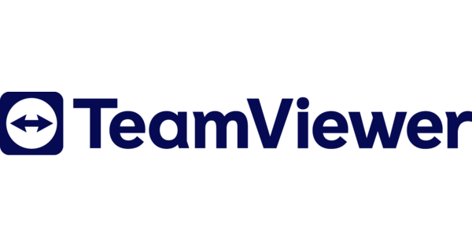

.jpg)
TeamViewer
Diese Woche hatten wir bei Frank das Thema Remote Management auf dem Programm und konnten dabei
viele neue Dinge lernen. Wir haben verschiedene cloudbasierte Remote-Access-Tools kennengelernt und
in Gruppen damit gearbeitet. Im Anschluss durfte jede Gruppe ihr Tool präsentieren. Marija, Jamie
und ich hatten TeamViewer. Ich finde dieses Tool sehr nützlich und einfach zu bedienen, da es
übersichtlich aufgebaut ist und man schnell versteht, wie es funktioniert. Neben TeamViewer gibt es
noch viele weitere Remote-Zugriffstools wie Splashtop oder Chrome Remote Desktop, die ähnliche
Funktionen bieten. Insgesamt war es spannend zu sehen, wie viele verschiedene Möglichkeiten es gibt,
Geräte aus der Ferne zu steuern und zu verwalten.
Was ist TeamViewer?
Nach der schnellen Installation von TeamViewer erhält man eine individuelle Benutzer-ID und ein Passwort. Damit ist der Zugang jedoch noch nicht möglich: Um auf den Desktop einer anderen Person zuzugreifen, muss TeamViewer auch auf dem Zielgerät installiert und aktiv sein. Zusätzlich benötigt man die ID-Nummer und den Sicherheitscode der anderen Person, um eine Verbindung aufzubauen.
TeamViewer ermöglicht die einfache und zuverlässige Fernwartung von PCs über das Internet. Neben dem klassischen Remote-Support lassen sich auch Präsentationen vorführen, gemeinsam an Projekten arbeiten oder grössere Dateien austauschen. Dank der verschlüsselten und geschützten Datenkanäle besteht dabei kein Risiko für die Sicherheit der übertragenen Informationen.
Mit TeamViewer kann man entweder einen fremden Computer über das Internet steuern oder den eigenen PC von jemand anderem fernsteuern lassen. So lässt sich in wenigen Minuten ein sicherer Fernzugriff einrichten. Ideal, wenn Fachpersonal Probleme auf Kundencomputern lösen soll oder wenn man selbst auf einen PC zugreifen muss, der sich nicht in der Nähe befindet.
Die Verbindungen zwischen Host und Client sind mit 256-Bit-AES verschlüsselt und werden über einen Public-/Private-Key-Austausch gesichert. Diese Technik wird auch bei als sehr sicher geltenden Protokollen wie HTTPS verwendet. TeamViewer zählt daher zu den vertrauenswürdigen Remote-Access-Tools und kann bedenkenlos eingesetzt werden.
Zusätzlich bietet TeamViewer weitere Funktionen:
- Plattformübergreifender Zugriff (Windows, macOS, Linux, Android, iOS)
- Zwei-Faktor-Authentifizierung für erhöhte Sicherheit
- Dateiübertragung per Drag & Drop
- Multi-Monitor-Unterstützung
- Sitzungsaufzeichnung für Dokumentation oder Schulungszwecke.
Fazit
Die Woche zum Thema Remote Management war lehrreich und praxisnah. Ich habe gelernt, dass man mit Remote-Access-Tools wie TeamViewer einfach und sicher auf entfernte Geräte zugreifen kann. TeamViewer ist ein Werkzeug, das jeder einfach benutzen kann. Man kann es privat und in der Arbeit benutzen. Besonders gut fand ich die zusätzlichen Funktionen wie die Dateiübertragung, die Unterstützung für mehrere Monitore und die hohe Sicherheitsstufe. Die anderen Teams haben gezeigt, dass es viele Lösungen gibt und jedes Tool seine Stärken hat. Mir hat das Thema Remote Management gezeigt, wie moderne Arbeits und Supportmethoden heute aussehen und wie wichtig die entsprechenden Tools sind.
Weekly random Facts

M&M's
M&M's sind weltweit bekannte Schokoladenkonfekte. Sie bestehen aus einem Kern aus Milchschokolade oder anderen Schokoladensorten und sind von einer bunten, harten Zuckerhülle umgeben. Sie werden als Portionsware angeboten und zeichnen sich durch ihre praktische Handhabung und hohe Markenbekanntheit aus. Bei ihrer Herstellung wird technologische Lebensmittelverarbeitung mit anspruchsvollem Marketing kombiniert.
Schokoladenkerne werden zunächst conchiert, temperiert und geformt. Anschliessend erfolgt das sogenannte Dragieren, bei dem die Zucker oder Schalenmasse schichtweise aufgetragen und getrocknet wird. Die farbige Oberfläche entsteht durch mehrere Farbschichten, auf die schliesslich das charakteristische „M“-Logo aufgedruckt wird. Abschliessend werden die Konfekte portioniert, verpackt und etikettiert. Dabei spielt die Verpackung eine zentrale Rolle, da sie sowohl die Haltbarkeit sicherstellt als auch die Markenwahrnehmung unterstützt.
Die Qualitätssicherung ist bei M&M's von zentraler Bedeutung. So werden Rohstoffe auf mikrobiologische und sensorische Eigenschaften überprüft, die Produktionsumgebung hinsichtlich Temperatur und Luftfeuchtigkeit überwacht und die fertigen Produkte auf Fremdkörper sowie mittels Metalldetektion kontrolliert. Auch die Rückverfolgbarkeit von Chargen ist gewährleistet. Für die Konsumenten ist die sensorische Qualität besonders wichtig: Die Schale soll knackig sein, der Kern zart schmelzen, die Farben sollen gleichmässig sein und das Logo soll klar erkennbar sein.
M&M's sind in vielen verschiedenen Sorten erhältlich, darunter die Klassiker Milchschokolade, Erdnuss, Crisp, Dunkle Schokolade, Weisse Schokolade sowie saisonale Sondereditionen. Dadurch kann der Hersteller unterschiedliche Zielgruppen ansprechen und die Markenbekanntheit steigern. Ein weiterer wichtiger Faktor ist die Nachhaltigkeit, insbesondere bei der Beschaffung von Kakao. Zertifizierungen wie Fairtrade oder Rainforest Alliance sollen faire Arbeitsbedingungen gewährleisten und den Umweltschutz fördern. Auch die Verpackung wird zunehmend umweltfreundlicher gestaltet, um Ressourcen zu schonen und das Recycling zu erleichtern.
Insgesamt stellen M&M's ein technisch ausgereiftes und erfolgreich vermarktetes Produkt dar. Die Kombination aus standardisierten Produktionsprozessen, strenger Qualitätssicherung, vielfältigen Produktvarianten und kreativem Marketing trägt wesentlich zu ihrem Erfolg bei. Für die Zukunft sind Massnahmen zur nachhaltigen Rohstoffbeschaffung und zur Reduzierung von Verpackungsmaterialien wichtige Handlungsfelder, um den Anforderungen moderner Verbraucherinnen und Verbraucher gerecht zu werden.